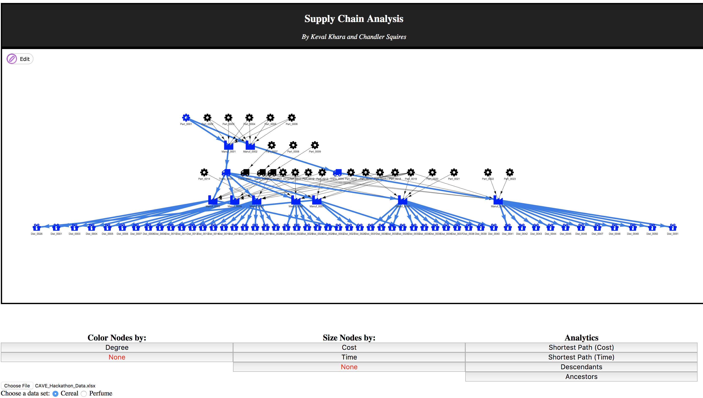
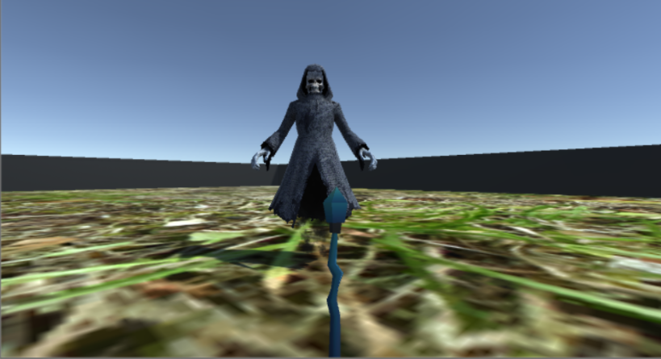
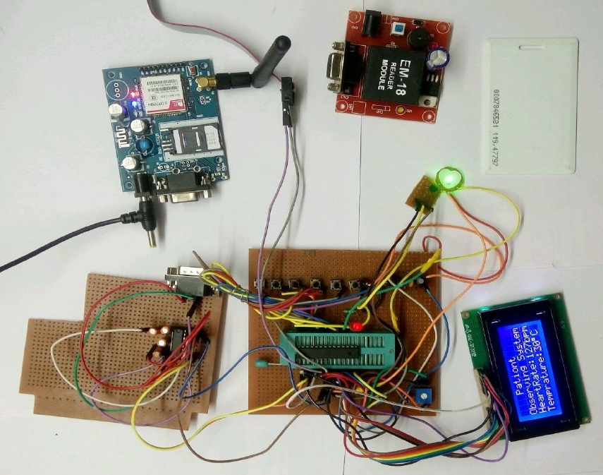

Network Visualization for Big Data
February, 2018
Built a web application using JavaScript, HTML5 and CSS for better visualizing and managing a complex network of nodes within a large dataset. Came in 2nd Place at MIT CAVE Lab Hackathon 2018.
JavaScript
HTML5
CSS

3-D Gesture Controlled Game Against AI
November, 2017
Developed a 3-D gesture controlled game in 12 hours at HackWITus 2017 using Unity Game Engine and Myo armband. The Myo armband is used to move and attack the AI bots using different hand gestures. AI bots are programmed to constantly search for the player to attack using Predictive Modeling and Pathfinding Algorithms.
C#
Unity Engine
Artificial Intelligence
Myo Armband
Go&Meet
October, 2017 - November, 2017
Developed an Android application for social networking using Google’s Firebase and Android Studio. This application is essentially useful for events and advertisements. Used Open Data to display valuable information to the users about the neighborhood. Sorted the events according to the preference of the users for better user retention.
Java
Android Studio
Firebase
NoSQL

Face Recognition and Verification Software
October, 2017
Developed a web application in less than 24 hours and demoed in BostonHacks Fall 2017, which successfully detects and recognizes a person's face and displays information about the person from the database. Integrated the OpenCV library in the back-end of our website which detects the face using Haar Cascade Classifier, and recognizes the face using the Eigenfaces Algorithm. The website was developed using HTML, Django and MySQL.
Python
OpenCV
Django
Javascript
HTML
CSS

Patient Monitoring System
August, 2016 - February, 2017
Implemented a project which continuously monitors a patient-at-home’s pulse rate and temperature, and alerts the nearby emergency services using the GSM module. Implemented an RFID reader which would read the unique ID stored in each RFID card that is given to every patient. Developed a website using PHP, CSS and MySQL for ease in maintaining and updating a patient’s medical records.
Atmega8 Microcontroller
C++
PHP
MySQL
HTML/CSS
RFID/GSM
Wireless Sensor Network with IoT Logging
June 2016 - July 2016
Implemented a sensor node that could sense data from any connected sensor and transmit it over a WiFi interface to a Sparkfun Phant Server using ESP8266. Storing values on IoT Cloud Phant using ESP8266, which are received by WSN co-ordinator from multiple discrete nodes using NRF24L01P.
C++
IoT
Embedded Systems
USB and Wireless Gesture Controlled Mouse
June 2016 - July 2016
Used the on board accelerometer (Freescale MMA8451Q) and capacitive sensor APIs of MBED and developed a mouse that alters its sensitivity with respect to the user input. Extended the gesture controlled USB mouse to give it a wireless capability using an nRF24L01P trans-receiver pair.
C++
Embedded Systems
Multinode Wireless Data Acquisition System
June, 2016
Developed a data acquisition and logging system using multiple sensor nodes and a single receiver which logs the data. Communication was achieved using an nRF24L01P trans-receiver pair.
C++
Embedded Systems
Custom Home Automation Controller using PSoC Bluetooth Low Energy (BLE)
July, 2016
Using Cypress Programmable System-on-Chip, developed a custom BLE profile to control various digital appliances using Bluetooth Low Energy.
PSoC
C++
BLE
High Speed Motion Detection
May, 2016
Detection of fast and abrupt motion of a device using a 3-Axis Freescale Semiconductors MMA8451Q accelerometer with FRDM KL25Z.
C++
FRDM KL25Z
PSoC Bluetooth Low Energy (BLE) FindMe Beacon
May, 2016
Using the Cypress Programmable System-on-chip, developed a beacon with different alert modes to locate the PSoC 4 BLE device.
C++
PSoC
Digital Calculator
February, 2016 - April, 2016
Designed a calculator using microcontroller IC 8051 that performed basic arithmetic operations like addition, subtraction, multiplication, division and squaring. Studied and implemented the interfacing of various peripherals such as 16x2 LCD Display and 4x3 Matrix Keypad with 8051 microcontroller.
C++
IC 8051
LCD
Metal Detector
July, 2015 - September, 2015
Developed a basic metal detector using a 555 Timer IC, which successfully detects a metal and generates sound with the help of a speaker.
C++
IC 555